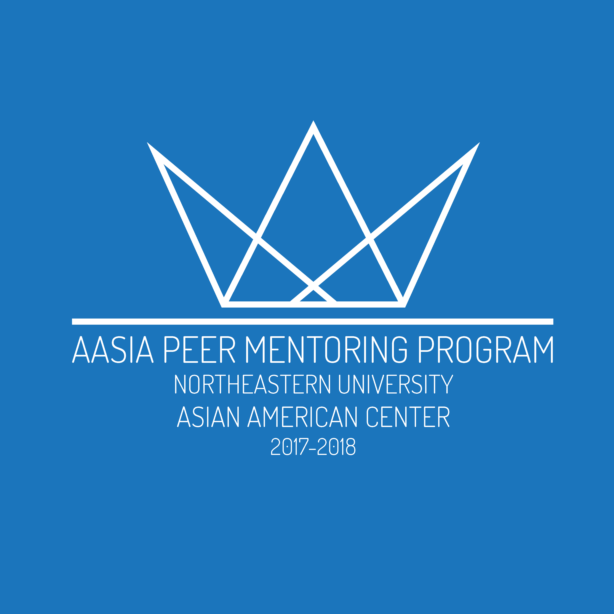
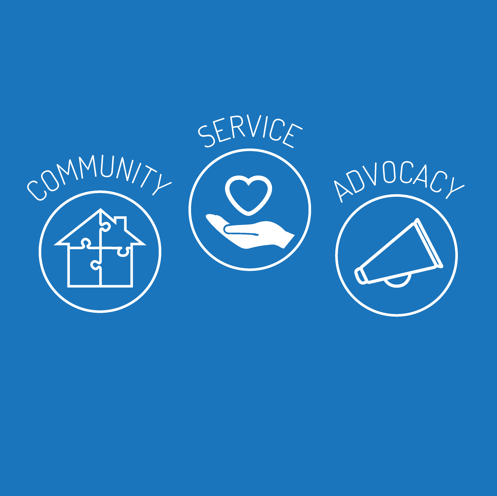

Asian-American Students in Action (AASIA)
AASIA is a mentoring program hosted by Northeastern University's Asian-American Center which pairs freshman and transfer students new to the campus with mentors, with its main pillars of Community, Service, and Advocacy. A close-knit community is fostered throughout the academic year via bi-weekly discussions of topics such as Asian-American identity and leadership. I joined AASIA on a whim my freshman year, and acted as a mentor this past year. In addition to my mentor duties, I was asked to design the apparel for the program.
With the core pillars of Community, Service, and Advocacy in mind, I created icons for these values for the back design of the crewneck. As for the front design, I created a simple logo that unified the 3 pillars together.

